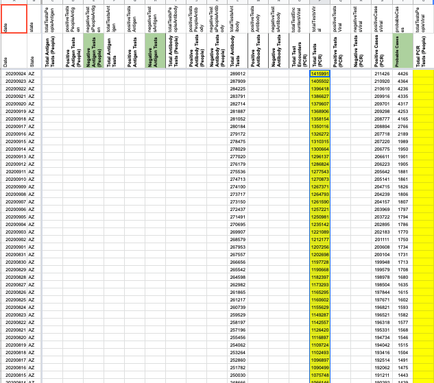

#1135: [AZ] Move total antibody tests (specimens) timeseries into Total antibody tests (people) and backfill Total antibody tests (speicmens)
Issue number 1135
hmhoffman opened this issue on March 7, 2021, 9:56 AM PST
State: AZ
Dates affected: 05/07/20 - 03/07/21
Describe the issue: The Total antibody tests (specimens) figure we have been capturing for Arizona is actuall Total antibody tests (people). Arizona also provides a true Total antibody tests (specimens) number on their dashboard. We are moving our Total antibody tests (specimens) timeseries into Total antibody tests (specimens), and will begin capturing Total antibody tests (specimens) from their data dashboard, and backfill this timeseries through 07/16/20 from the graph on Arizona's dashboard.
Comments
Rows edited: 368
AZ 2021-03-06 totalTestsAntibody: 580318 (was None) AZ 2021-03-05 totalTestsAntibody: 579560 (was None) AZ 2021-03-04 totalTestsAntibody: 578537 (was None) AZ 2021-03-03 totalTestsAntibody: 577188 (was None) AZ 2021-03-02 totalTestsAntibody: 576217 (was None) AZ 2021-03-01 totalTestsAntibody: 575979 (was None) AZ 2021-02-28 totalTestsAntibody: 575378 (was None) AZ 2021-02-27 totalTestsAntibody: 574247 (was None) AZ 2021-02-26 totalTestsAntibody: 572668 (was None) AZ 2021-02-25 totalTestsAntibody: 570842 (was None) AZ 2021-02-24 totalTestsAntibody: 568862 (was None) AZ 2021-02-23 totalTestsAntibody: 567459 (was None) AZ 2021-02-22 totalTestsAntibody: 566978 (was None) AZ 2021-02-21 totalTestsAntibody: 566114 (was None) AZ 2021-02-20 totalTestsAntibody: 564619 (was None) AZ 2021-02-19 totalTestsAntibody: 562963 (was None) AZ 2021-02-18 totalTestsAntibody: 560865 (was None) AZ 2021-02-17 totalTestsAntibody: 559074 (was None) AZ 2021-02-16 totalTestsAntibody: 557794 (was None) AZ 2021-02-15 totalTestsAntibody: 557403 (was None) AZ 2021-02-14 totalTestsAntibody: 556629 (was None) AZ 2021-02-13 totalTestsAntibody: 554886 (was None) AZ 2021-02-12 totalTestsAntibody: 552818 (was None) AZ 2021-02-11 totalTestsAntibody: 551406 (was None) AZ 2021-02-10 totalTestsAntibody: 549670 (was None) AZ 2021-02-09 totalTestsAntibody: 548188 (was None) AZ 2021-02-08 totalTestsAntibody: 547915 (was None) AZ 2021-02-07 totalTestsAntibody: 547275 (was None) AZ 2021-02-06 totalTestsAntibody: 545719 (was None) AZ 2021-02-05 totalTestsAntibody: 543935 (was None) AZ 2021-02-04 totalTestsAntibody: 541820 (was None) AZ 2021-02-03 totalTestsAntibody: 539976 (was None) AZ 2021-02-02 totalTestsAntibody: 538419 (was None) AZ 2021-02-01 totalTestsAntibody: 538066 (was None) AZ 2021-01-31 totalTestsAntibody: 537315 (was None) AZ 2021-01-30 totalTestsAntibody: 535655 (was None) AZ 2021-01-29 totalTestsAntibody: 533935 (was None) AZ 2021-01-28 totalTestsAntibody: 531723 (was None) AZ 2021-01-27 totalTestsAntibody: 529787 (was None) AZ 2021-01-26 totalTestsAntibody: 528280 (was None) AZ 2021-01-25 totalTestsAntibody: 527775 (was None) AZ 2021-01-24 totalTestsAntibody: 526923 (was None) AZ 2021-01-23 totalTestsAntibody: 525195 (was None) AZ 2021-01-22 totalTestsAntibody: 523200 (was None) AZ 2021-01-21 totalTestsAntibody: 521618 (was None) AZ 2021-01-20 totalTestsAntibody: 519466 (was None) AZ 2021-01-19 totalTestsAntibody: 517937 (was None) AZ 2021-01-18 totalTestsAntibody: 517482 (was None) AZ 2021-01-17 totalTestsAntibody: 516750 (was None) AZ 2021-01-16 totalTestsAntibody: 514886 (was None) AZ 2021-01-15 totalTestsAntibody: 513006 (was None) AZ 2021-01-14 totalTestsAntibody: 511180 (was None) AZ 2021-01-13 totalTestsAntibody: 509039 (was None) AZ 2021-01-12 totalTestsAntibody: 507483 (was None) AZ 2021-01-11 totalTestsAntibody: 507098 (was None) AZ 2021-01-10 totalTestsAntibody: 506459 (was None) AZ 2021-01-09 totalTestsAntibody: 504461 (was None) AZ 2021-01-08 totalTestsAntibody: 502366 (was None) AZ 2021-01-07 totalTestsAntibody: 500180 (was None) AZ 2021-01-06 totalTestsAntibody: 498185 (was None) AZ 2021-01-05 totalTestsAntibody: 496403 (was None) AZ 2021-01-04 totalTestsAntibody: 495894 (was None) AZ 2021-01-03 totalTestsAntibody: 495218 (was None) AZ 2021-01-02 totalTestsAntibody: 494862 (was None) AZ 2021-01-01 totalTestsAntibody: 493757 (was None) AZ 2020-12-31 totalTestsAntibody: 491918 (was None) AZ 2020-12-30 totalTestsAntibody: 490174 (was None) AZ 2020-12-29 totalTestsAntibody: 488839 (was None) AZ 2020-12-28 totalTestsAntibody: 488550 (was None) AZ 2020-12-27 totalTestsAntibody: 488191 (was None) AZ 2020-12-26 totalTestsAntibody: 488056 (was None) AZ 2020-12-25 totalTestsAntibody: 487302 (was None) AZ 2020-12-24 totalTestsAntibody: 485476 (was None) AZ 2020-12-23 totalTestsAntibody: 483451 (was None) AZ 2020-12-22 totalTestsAntibody: 481747 (was None) AZ 2020-12-21 totalTestsAntibody: 481340 (was None) AZ 2020-12-20 totalTestsAntibody: 480619 (was None) AZ 2020-12-19 totalTestsAntibody: 478903 (was None) AZ 2020-12-18 totalTestsAntibody: 477028 (was None) AZ 2020-12-17 totalTestsAntibody: 475090 (was None) AZ 2020-12-16 totalTestsAntibody: 473513 (was None) AZ 2020-12-15 totalTestsAntibody: 471973 (was None) AZ 2020-12-14 totalTestsAntibody: 471658 (was None) AZ 2020-12-13 totalTestsAntibody: 470894 (was None) AZ 2020-12-12 totalTestsAntibody: 469285 (was None) AZ 2020-12-11 totalTestsAntibody: 467314 (was None) AZ 2020-12-10 totalTestsAntibody: 465235 (was None) AZ 2020-12-09 totalTestsAntibody: 463284 (was None) AZ 2020-12-08 totalTestsAntibody: 461682 (was None) AZ 2020-12-07 totalTestsAntibody: 461323 (was None) AZ 2020-12-06 totalTestsAntibody: 460621 (was None) AZ 2020-12-05 totalTestsAntibody: 459090 (was None) AZ 2020-12-04 totalTestsAntibody: 457196 (was None) AZ 2020-12-03 totalTestsAntibody: 455091 (was None) AZ 2020-12-02 totalTestsAntibody: 452708 (was None) AZ 2020-12-01 totalTestsAntibody: 450648 (was None) AZ 2020-11-30 totalTestsAntibody: 449973 (was None) AZ 2020-11-29 totalTestsAntibody: 448883 (was None) AZ 2020-11-28 totalTestsAntibody: 447812 (was None) AZ 2020-11-27 totalTestsAntibody: 447576 (was None) AZ 2020-11-26 totalTestsAntibody: 445594 (was None) AZ 2020-11-25 totalTestsAntibody: 443634 (was None) AZ 2020-11-24 totalTestsAntibody: 441838 (was None) AZ 2020-11-23 totalTestsAntibody: 441256 (was None) AZ 2020-11-22 totalTestsAntibody: 440171 (was None) AZ 2020-11-21 totalTestsAntibody: 438044 (was None) AZ 2020-11-20 totalTestsAntibody: 436592 (was None) AZ 2020-11-19 totalTestsAntibody: 434419 (was None) AZ 2020-11-18 totalTestsAntibody: 432134 (was None) AZ 2020-11-17 totalTestsAntibody: 430364 (was None) AZ 2020-11-16 totalTestsAntibody: 429493 (was None) AZ 2020-11-15 totalTestsAntibody: 428367 (was None) AZ 2020-11-14 totalTestsAntibody: 426466 (was None) AZ 2020-11-13 totalTestsAntibody: 424886 (was None) AZ 2020-11-12 totalTestsAntibody: 423350 (was None) AZ 2020-11-11 totalTestsAntibody: 421428 (was None) AZ 2020-11-10 totalTestsAntibody: 419691 (was None) AZ 2020-11-09 totalTestsAntibody: 418900 (was None) AZ 2020-11-08 totalTestsAntibody: 417658 (was None) AZ 2020-11-07 totalTestsAntibody: 415900 (was None) AZ 2020-11-06 totalTestsAntibody: 414437 (was None) AZ 2020-11-05 totalTestsAntibody: 412908 (was None) AZ 2020-11-04 totalTestsAntibody: 411072 (was None) AZ 2020-11-03 totalTestsAntibody: 409383 (was None) AZ 2020-11-02 totalTestsAntibody: 408714 (was None) AZ 2020-11-01 totalTestsAntibody: 407735 (was None) AZ 2020-10-31 totalTestsAntibody: 405894 (was None) AZ 2020-10-30 totalTestsAntibody: 403989 (was None) AZ 2020-10-29 totalTestsAntibody: 402085 (was None) AZ 2020-10-28 totalTestsAntibody: 399841 (was None) AZ 2020-10-27 totalTestsAntibody: 398028 (was None) AZ 2020-10-26 totalTestsAntibody: 397342 (was None) AZ 2020-10-25 totalTestsAntibody: 396285 (was None) AZ 2020-10-24 totalTestsAntibody: 394092 (was None) AZ 2020-10-23 totalTestsAntibody: 392396 (was None) AZ 2020-10-22 totalTestsAntibody: 390954 (was None) AZ 2020-10-21 totalTestsAntibody: 389111 (was None) AZ 2020-10-20 totalTestsAntibody: 387436 (was None) AZ 2020-10-19 totalTestsAntibody: 386709 (was None) AZ 2020-10-18 totalTestsAntibody: 385544 (was None) AZ 2020-10-17 totalTestsAntibody: 383829 (was None) AZ 2020-10-16 totalTestsAntibody: 382075 (was None) AZ 2020-10-15 totalTestsAntibody: 380398 (was None) AZ 2020-10-14 totalTestsAntibody: 378395 (was None) AZ 2020-10-13 totalTestsAntibody: 376656 (was None) AZ 2020-10-12 totalTestsAntibody: 375886 (was None) AZ 2020-10-11 totalTestsAntibody: 374816 (was None) AZ 2020-10-10 totalTestsAntibody: 372442 (was None) AZ 2020-10-09 totalTestsAntibody: 370643 (was None) AZ 2020-10-08 totalTestsAntibody: 368482 (was None) AZ 2020-10-07 totalTestsAntibody: 366319 (was None) AZ 2020-10-06 totalTestsAntibody: 364637 (was None) AZ 2020-10-05 totalTestsAntibody: 364033 (was None) AZ 2020-10-04 totalTestsAntibody: 362622 (was None) AZ 2020-10-03 totalTestsAntibody: 360730 (was None) AZ 2020-10-02 totalTestsAntibody: 359060 (was None) AZ 2020-10-01 totalTestsAntibody: 357414 (was None) AZ 2020-09-30 totalTestsAntibody: 355410 (was None) AZ 2020-09-29 totalTestsAntibody: 353517 (was None) AZ 2020-09-28 totalTestsAntibody: 352876 (was None) AZ 2020-09-27 totalTestsAntibody: 351862 (was None) AZ 2020-09-26 totalTestsAntibody: 349938 (was None) AZ 2020-09-25 totalTestsAntibody: 348167 (was None) AZ 2020-09-24 totalTestsAntibody: 346495 (was None) AZ 2020-09-23 totalTestsAntibody: 344432 (was None) AZ 2020-09-22 totalTestsAntibody: 342782 (was None) AZ 2020-09-21 totalTestsAntibody: 342299 (was None) AZ 2020-09-20 totalTestsAntibody: 341668 (was None) AZ 2020-09-19 totalTestsAntibody: 339866 (was None) AZ 2020-09-18 totalTestsAntibody: 338768 (was None) AZ 2020-09-17 totalTestsAntibody: 337526 (was None) AZ 2020-09-16 totalTestsAntibody: 336133 (was None) AZ 2020-09-15 totalTestsAntibody: 334680 (was None) AZ 2020-09-14 totalTestsAntibody: 334187 (was None) AZ 2020-09-13 totalTestsAntibody: 333533 (was None) AZ 2020-09-12 totalTestsAntibody: 331886 (was None) AZ 2020-09-11 totalTestsAntibody: 330810 (was None) AZ 2020-09-10 totalTestsAntibody: 329718 (was None) AZ 2020-09-09 totalTestsAntibody: 328275 (was None) AZ 2020-09-08 totalTestsAntibody: 327779 (was None) AZ 2020-09-07 totalTestsAntibody: 327217 (was None) AZ 2020-09-06 totalTestsAntibody: 326608 (was None) AZ 2020-09-05 totalTestsAntibody: 325245 (was None) AZ 2020-09-04 totalTestsAntibody: 324138 (was None) AZ 2020-09-03 totalTestsAntibody: 323046 (was None) AZ 2020-09-02 totalTestsAntibody: 321549 (was None) AZ 2020-09-01 totalTestsAntibody: 319986 (was None) AZ 2020-08-31 totalTestsAntibody: 319534 (was None) AZ 2020-08-30 totalTestsAntibody: 318906 (was None) AZ 2020-08-29 totalTestsAntibody: 317139 (was None) AZ 2020-08-28 totalTestsAntibody: 315723 (was None) AZ 2020-08-27 totalTestsAntibody: 314349 (was None) AZ 2020-08-26 totalTestsAntibody: 312454 (was None) AZ 2020-08-25 totalTestsAntibody: 310714 (was None) AZ 2020-08-24 totalTestsAntibody: 310224 (was None) AZ 2020-08-23 totalTestsAntibody: 309582 (was None) AZ 2020-08-22 totalTestsAntibody: 307676 (was None) AZ 2020-08-21 totalTestsAntibody: 305925 (was None) AZ 2020-08-20 totalTestsAntibody: 304283 (was None) AZ 2020-08-19 totalTestsAntibody: 302087 (was None) AZ 2020-08-18 totalTestsAntibody: 300007 (was None) AZ 2020-08-17 totalTestsAntibody: 299451 (was None) AZ 2020-08-16 totalTestsAntibody: 298808 (was None) AZ 2020-08-15 totalTestsAntibody: 296673 (was None) AZ 2020-08-14 totalTestsAntibody: 294763 (was None) AZ 2020-08-13 totalTestsAntibody: 292825 (was None) AZ 2020-08-12 totalTestsAntibody: 290414 (was None) AZ 2020-08-11 totalTestsAntibody: 288276 (was None) AZ 2020-08-10 totalTestsAntibody: 287773 (was None) AZ 2020-08-09 totalTestsAntibody: 287117 (was None) AZ 2020-08-08 totalTestsAntibody: 284895 (was None) AZ 2020-08-07 totalTestsAntibody: 282598 (was None) AZ 2020-08-06 totalTestsAntibody: 280696 (was None) AZ 2020-08-05 totalTestsAntibody: 278398 (was None) AZ 2020-08-04 totalTestsAntibody: 276051 (was None) AZ 2020-08-03 totalTestsAntibody: 275562 (was None) AZ 2020-08-02 totalTestsAntibody: 274873 (was None) AZ 2020-08-01 totalTestsAntibody: 272439 (was None) AZ 2020-07-31 totalTestsAntibody: 269923 (was None) AZ 2020-07-30 totalTestsAntibody: 267105 (was None) AZ 2020-07-29 totalTestsAntibody: 264215 (was None) AZ 2020-07-28 totalTestsAntibody: 261430 (was None) AZ 2020-07-27 totalTestsAntibody: 260983 (was None) AZ 2020-07-26 totalTestsAntibody: 260351 (was None) AZ 2020-07-25 totalTestsAntibody: 257551 (was None) AZ 2020-07-24 totalTestsAntibody: 255150 (was None) AZ 2020-07-23 totalTestsAntibody: 252884 (was None) AZ 2020-07-22 totalTestsAntibody: 249837 (was None) AZ 2020-07-21 totalTestsAntibody: 246810 (was None) AZ 2020-07-20 totalTestsAntibody: 246336 (was None) AZ 2020-07-19 totalTestsAntibody: 245671 (was None) AZ 2020-07-18 totalTestsAntibody: 242837 (was None) AZ 2020-07-17 totalTestsAntibody: 240534 (was None) AZ 2020-07-16 totalTestsAntibody: 238219 (was None) AZ 2020-07-15 totalTestsAntibody: 235288 (was None) AZ 2020-07-14 totalTestsAntibody: 232343 (was None) AZ 2020-07-13 totalTestsAntibody: 231791 (was None) AZ 2020-07-12 totalTestsAntibody: 230956 (was None) AZ 2020-07-11 totalTestsAntibody: 227933 (was None) AZ 2020-07-10 totalTestsAntibody: 225140 (was None) AZ 2020-07-09 totalTestsAntibody: 222446 (was None) AZ 2020-07-08 totalTestsAntibody: 219114 (was None) AZ 2020-07-07 totalTestsAntibody: 216268 (was None) AZ 2020-07-06 totalTestsAntibody: 215791 (was None) AZ 2020-07-05 totalTestsAntibody: 215183 (was None) AZ 2020-07-04 totalTestsAntibody: 214173 (was None) AZ 2020-07-03 totalTestsAntibody: 210982 (was None) AZ 2020-07-02 totalTestsAntibody: 207746 (was None) AZ 2020-07-01 totalTestsAntibody: 204412 (was None) AZ 2020-06-30 totalTestsAntibody: 200303 (was None) AZ 2020-06-29 totalTestsAntibody: 199719 (was None) AZ 2020-06-28 totalTestsAntibody: 198787 (was None) AZ 2020-06-27 totalTestsAntibody: 194641 (was None) AZ 2020-06-26 totalTestsAntibody: 190579 (was None) AZ 2020-06-25 totalTestsAntibody: 186691 (was None) AZ 2020-06-24 totalTestsAntibody: 182563 (was None) AZ 2020-06-23 totalTestsAntibody: 179185 (was None) AZ 2020-06-22 totalTestsAntibody: 178473 (was None) AZ 2020-06-21 totalTestsAntibody: 177548 (was None) AZ 2020-06-20 totalTestsAntibody: 173613 (was None) AZ 2020-06-19 totalTestsAntibody: 170096 (was None) AZ 2020-06-18 totalTestsAntibody: 167002 (was None) AZ 2020-06-17 totalTestsAntibody: 163007 (was None) AZ 2020-06-16 totalTestsAntibody: 159813 (was None) AZ 2020-06-15 totalTestsAntibody: 159138 (was None) AZ 2020-06-14 totalTestsAntibody: 158218 (was None) AZ 2020-06-13 totalTestsAntibody: 154757 (was None) AZ 2020-06-12 totalTestsAntibody: 151020 (was None) AZ 2020-06-11 totalTestsAntibody: 147343 (was None) AZ 2020-06-10 totalTestsAntibody: 141708 (was None) AZ 2020-06-09 totalTestsAntibody: 137700 (was None) AZ 2020-06-08 totalTestsAntibody: 137046 (was None) AZ 2020-06-07 totalTestsAntibody: 135958 (was None) AZ 2020-06-06 totalTestsAntibody: 132191 (was None) AZ 2020-06-05 totalTestsAntibody: 128552 (was None) AZ 2020-06-04 totalTestsAntibody: 124976 (was None) AZ 2020-06-03 totalTestsAntibody: 120814 (was None) AZ 2020-06-02 totalTestsAntibody: 116283 (was None) AZ 2020-06-01 totalTestsAntibody: 115519 (was None) AZ 2020-05-31 totalTestsAntibody: 113623 (was None) AZ 2020-05-30 totalTestsAntibody: 109543 (was None) AZ 2020-05-29 totalTestsAntibody: 105486 (was None) AZ 2020-05-28 totalTestsAntibody: 101232 (was None) AZ 2020-05-27 totalTestsAntibody: 96842 (was None) AZ 2020-05-26 totalTestsAntibody: 96266 (was None) AZ 2020-05-25 totalTestsAntibody: 95583 (was None) AZ 2020-05-24 totalTestsAntibody: 93312 (was None) AZ 2020-05-23 totalTestsAntibody: 88847 (was None) AZ 2020-05-22 totalTestsAntibody: 84064 (was None) AZ 2020-05-21 totalTestsAntibody: 79108 (was None) AZ 2020-05-20 totalTestsAntibody: 74087 (was None) AZ 2020-05-19 totalTestsAntibody: 68912 (was None) AZ 2020-05-18 totalTestsAntibody: 67571 (was None) AZ 2020-05-17 totalTestsAntibody: 65780 (was None) AZ 2020-05-16 totalTestsAntibody: 60776 (was None) AZ 2020-05-15 totalTestsAntibody: 56355 (was None) AZ 2020-05-14 totalTestsAntibody: 52083 (was None) AZ 2020-05-13 totalTestsAntibody: 47603 (was None) AZ 2020-05-12 totalTestsAntibody: 42820 (was None) AZ 2020-05-11 totalTestsAntibody: 42352 (was None) AZ 2020-05-10 totalTestsAntibody: 41318 (was None) AZ 2020-05-09 totalTestsAntibody: 35782 (was None) AZ 2020-05-08 totalTestsAntibody: 30842 (was None) AZ 2020-05-07 totalTestsAntibody: 25887 (was None) AZ 2020-05-06 totalTestsAntibody: 20997 (was None) AZ 2020-05-05 totalTestsAntibody: 16134 (was None) AZ 2020-05-04 totalTestsAntibody: 15730 (was None) AZ 2020-05-03 totalTestsAntibody: 15195 (was None) AZ 2020-05-02 totalTestsAntibody: 11014 (was None) AZ 2020-05-01 totalTestsAntibody: 7495 (was None) AZ 2020-04-30 totalTestsAntibody: 4225 (was None) AZ 2020-04-29 totalTestsAntibody: 1901 (was None) AZ 2020-04-28 totalTestsAntibody: 411 (was None) AZ 2020-04-27 totalTestsAntibody: 404 (was None) AZ 2020-04-26 totalTestsAntibody: 382 (was None) AZ 2020-04-25 totalTestsAntibody: 221 (was None) AZ 2020-04-24 totalTestsAntibody: 154 (was None) AZ 2020-04-23 totalTestsAntibody: 124 (was None) AZ 2020-04-22 totalTestsAntibody: 106 (was None) AZ 2020-04-21 totalTestsAntibody: 75 (was None) AZ 2020-04-20 totalTestsAntibody: 72 (was None) AZ 2020-04-19 totalTestsAntibody: 68 (was None) AZ 2020-04-18 totalTestsAntibody: 53 (was None) AZ 2020-04-17 totalTestsAntibody: 43 (was None) AZ 2020-04-16 totalTestsAntibody: 36 (was None) AZ 2020-04-15 totalTestsAntibody: 30 (was None) AZ 2020-04-14 totalTestsAntibody: 20 (was None) AZ 2020-04-13 totalTestsAntibody: 18 (was None) AZ 2020-04-12 totalTestsAntibody: 17 (was None) AZ 2020-04-11 totalTestsAntibody: 13 (was None) AZ 2020-04-10 totalTestsAntibody: 7 (was None) AZ 2020-04-09 totalTestsAntibody: 5 (was None) AZ 2020-04-08 totalTestsAntibody: 3 (was None) AZ 2020-04-07 totalTestsAntibody: 1 (was None) AZ 2020-04-06 totalTestsAntibody: 1 (was None) AZ 2020-04-05 totalTestsAntibody: 1 (was None) AZ 2020-04-04 totalTestsAntibody: 1 (was None) AZ 2020-04-03 totalTestsAntibody: 0 (was None) AZ 2020-04-02 totalTestsAntibody: 0 (was None) AZ 2020-04-01 totalTestsAntibody: 0 (was None) AZ 2020-03-31 totalTestsAntibody: 0 (was None) AZ 2020-03-30 totalTestsAntibody: 0 (was None) AZ 2020-03-29 totalTestsAntibody: 0 (was None) AZ 2020-03-28 totalTestsAntibody: 0 (was None) AZ 2020-03-27 totalTestsAntibody: 0 (was None) AZ 2020-03-26 totalTestsAntibody: 0 (was None) AZ 2020-03-25 totalTestsAntibody: 0 (was None) AZ 2020-03-24 totalTestsAntibody: 0 (was None) AZ 2020-03-23 totalTestsAntibody: 0 (was None) AZ 2020-03-22 totalTestsAntibody: 0 (was None) AZ 2020-03-21 totalTestsAntibody: 0 (was None) AZ 2020-03-20 totalTestsAntibody: 0 (was None) AZ 2020-03-19 totalTestsAntibody: 0 (was None) AZ 2020-03-18 totalTestsAntibody: 0 (was None) AZ 2020-03-17 totalTestsAntibody: 0 (was None) AZ 2020-03-16 totalTestsAntibody: 0 (was None) AZ 2020-03-15 totalTestsAntibody: 0 (was None) AZ 2020-03-14 totalTestsAntibody: 0 (was None) AZ 2020-03-13 totalTestsAntibody: 0 (was None) AZ 2020-03-12 totalTestsAntibody: 0 (was None) AZ 2020-03-11 totalTestsAntibody: 0 (was None) AZ 2020-03-10 totalTestsAntibody: 0 (was None) AZ 2020-03-09 totalTestsAntibody: 0 (was None) AZ 2020-03-08 totalTestsAntibody: 0 (was None) AZ 2020-03-07 totalTestsAntibody: 0 (was None) AZ 2020-03-06 totalTestsAntibody: 0 (was None) AZ 2020-03-05 totalTestsAntibody: 0 (was None) AZ 2020-03-04 totalTestsAntibody: 0 (was None)
#1135: [AZ] Move total antibody tests (specimens) timeseries into Total antibody tests (people) and backfill Total antibody tests (speicmens)
Issue number 1135
hmhoffman opened this issue on March 7, 2021, 9:56 AM PST
State: AZ
Dates affected: 05/07/20 - 03/07/21
Describe the issue: The Total antibody tests (specimens) figure we have been capturing for Arizona is actuall Total antibody tests (people). Arizona also provides a true Total antibody tests (specimens) number on their dashboard. We are moving our Total antibody tests (specimens) timeseries into Total antibody tests (specimens), and will begin capturing Total antibody tests (specimens) from their data dashboard, and backfill this timeseries through 07/16/20 from the graph on Arizona's dashboard.
Comments
This issue has been automatically marked as stale because it has not had recent activity. It will be closed if no further activity occurs. Thank you for your contributions!
Rows edited: 368
AZ 2021-03-06 totalTestsAntibody: 580318 (was None) AZ 2021-03-05 totalTestsAntibody: 579560 (was None) AZ 2021-03-04 totalTestsAntibody: 578537 (was None) AZ 2021-03-03 totalTestsAntibody: 577188 (was None) AZ 2021-03-02 totalTestsAntibody: 576217 (was None) AZ 2021-03-01 totalTestsAntibody: 575979 (was None) AZ 2021-02-28 totalTestsAntibody: 575378 (was None) AZ 2021-02-27 totalTestsAntibody: 574247 (was None) AZ 2021-02-26 totalTestsAntibody: 572668 (was None) AZ 2021-02-25 totalTestsAntibody: 570842 (was None) AZ 2021-02-24 totalTestsAntibody: 568862 (was None) AZ 2021-02-23 totalTestsAntibody: 567459 (was None) AZ 2021-02-22 totalTestsAntibody: 566978 (was None) AZ 2021-02-21 totalTestsAntibody: 566114 (was None) AZ 2021-02-20 totalTestsAntibody: 564619 (was None) AZ 2021-02-19 totalTestsAntibody: 562963 (was None) AZ 2021-02-18 totalTestsAntibody: 560865 (was None) AZ 2021-02-17 totalTestsAntibody: 559074 (was None) AZ 2021-02-16 totalTestsAntibody: 557794 (was None) AZ 2021-02-15 totalTestsAntibody: 557403 (was None) AZ 2021-02-14 totalTestsAntibody: 556629 (was None) AZ 2021-02-13 totalTestsAntibody: 554886 (was None) AZ 2021-02-12 totalTestsAntibody: 552818 (was None) AZ 2021-02-11 totalTestsAntibody: 551406 (was None) AZ 2021-02-10 totalTestsAntibody: 549670 (was None) AZ 2021-02-09 totalTestsAntibody: 548188 (was None) AZ 2021-02-08 totalTestsAntibody: 547915 (was None) AZ 2021-02-07 totalTestsAntibody: 547275 (was None) AZ 2021-02-06 totalTestsAntibody: 545719 (was None) AZ 2021-02-05 totalTestsAntibody: 543935 (was None) AZ 2021-02-04 totalTestsAntibody: 541820 (was None) AZ 2021-02-03 totalTestsAntibody: 539976 (was None) AZ 2021-02-02 totalTestsAntibody: 538419 (was None) AZ 2021-02-01 totalTestsAntibody: 538066 (was None) AZ 2021-01-31 totalTestsAntibody: 537315 (was None) AZ 2021-01-30 totalTestsAntibody: 535655 (was None) AZ 2021-01-29 totalTestsAntibody: 533935 (was None) AZ 2021-01-28 totalTestsAntibody: 531723 (was None) AZ 2021-01-27 totalTestsAntibody: 529787 (was None) AZ 2021-01-26 totalTestsAntibody: 528280 (was None) AZ 2021-01-25 totalTestsAntibody: 527775 (was None) AZ 2021-01-24 totalTestsAntibody: 526923 (was None) AZ 2021-01-23 totalTestsAntibody: 525195 (was None) AZ 2021-01-22 totalTestsAntibody: 523200 (was None) AZ 2021-01-21 totalTestsAntibody: 521618 (was None) AZ 2021-01-20 totalTestsAntibody: 519466 (was None) AZ 2021-01-19 totalTestsAntibody: 517937 (was None) AZ 2021-01-18 totalTestsAntibody: 517482 (was None) AZ 2021-01-17 totalTestsAntibody: 516750 (was None) AZ 2021-01-16 totalTestsAntibody: 514886 (was None) AZ 2021-01-15 totalTestsAntibody: 513006 (was None) AZ 2021-01-14 totalTestsAntibody: 511180 (was None) AZ 2021-01-13 totalTestsAntibody: 509039 (was None) AZ 2021-01-12 totalTestsAntibody: 507483 (was None) AZ 2021-01-11 totalTestsAntibody: 507098 (was None) AZ 2021-01-10 totalTestsAntibody: 506459 (was None) AZ 2021-01-09 totalTestsAntibody: 504461 (was None) AZ 2021-01-08 totalTestsAntibody: 502366 (was None) AZ 2021-01-07 totalTestsAntibody: 500180 (was None) AZ 2021-01-06 totalTestsAntibody: 498185 (was None) AZ 2021-01-05 totalTestsAntibody: 496403 (was None) AZ 2021-01-04 totalTestsAntibody: 495894 (was None) AZ 2021-01-03 totalTestsAntibody: 495218 (was None) AZ 2021-01-02 totalTestsAntibody: 494862 (was None) AZ 2021-01-01 totalTestsAntibody: 493757 (was None) AZ 2020-12-31 totalTestsAntibody: 491918 (was None) AZ 2020-12-30 totalTestsAntibody: 490174 (was None) AZ 2020-12-29 totalTestsAntibody: 488839 (was None) AZ 2020-12-28 totalTestsAntibody: 488550 (was None) AZ 2020-12-27 totalTestsAntibody: 488191 (was None) AZ 2020-12-26 totalTestsAntibody: 488056 (was None) AZ 2020-12-25 totalTestsAntibody: 487302 (was None) AZ 2020-12-24 totalTestsAntibody: 485476 (was None) AZ 2020-12-23 totalTestsAntibody: 483451 (was None) AZ 2020-12-22 totalTestsAntibody: 481747 (was None) AZ 2020-12-21 totalTestsAntibody: 481340 (was None) AZ 2020-12-20 totalTestsAntibody: 480619 (was None) AZ 2020-12-19 totalTestsAntibody: 478903 (was None) AZ 2020-12-18 totalTestsAntibody: 477028 (was None) AZ 2020-12-17 totalTestsAntibody: 475090 (was None) AZ 2020-12-16 totalTestsAntibody: 473513 (was None) AZ 2020-12-15 totalTestsAntibody: 471973 (was None) AZ 2020-12-14 totalTestsAntibody: 471658 (was None) AZ 2020-12-13 totalTestsAntibody: 470894 (was None) AZ 2020-12-12 totalTestsAntibody: 469285 (was None) AZ 2020-12-11 totalTestsAntibody: 467314 (was None) AZ 2020-12-10 totalTestsAntibody: 465235 (was None) AZ 2020-12-09 totalTestsAntibody: 463284 (was None) AZ 2020-12-08 totalTestsAntibody: 461682 (was None) AZ 2020-12-07 totalTestsAntibody: 461323 (was None) AZ 2020-12-06 totalTestsAntibody: 460621 (was None) AZ 2020-12-05 totalTestsAntibody: 459090 (was None) AZ 2020-12-04 totalTestsAntibody: 457196 (was None) AZ 2020-12-03 totalTestsAntibody: 455091 (was None) AZ 2020-12-02 totalTestsAntibody: 452708 (was None) AZ 2020-12-01 totalTestsAntibody: 450648 (was None) AZ 2020-11-30 totalTestsAntibody: 449973 (was None) AZ 2020-11-29 totalTestsAntibody: 448883 (was None) AZ 2020-11-28 totalTestsAntibody: 447812 (was None) AZ 2020-11-27 totalTestsAntibody: 447576 (was None) AZ 2020-11-26 totalTestsAntibody: 445594 (was None) AZ 2020-11-25 totalTestsAntibody: 443634 (was None) AZ 2020-11-24 totalTestsAntibody: 441838 (was None) AZ 2020-11-23 totalTestsAntibody: 441256 (was None) AZ 2020-11-22 totalTestsAntibody: 440171 (was None) AZ 2020-11-21 totalTestsAntibody: 438044 (was None) AZ 2020-11-20 totalTestsAntibody: 436592 (was None) AZ 2020-11-19 totalTestsAntibody: 434419 (was None) AZ 2020-11-18 totalTestsAntibody: 432134 (was None) AZ 2020-11-17 totalTestsAntibody: 430364 (was None) AZ 2020-11-16 totalTestsAntibody: 429493 (was None) AZ 2020-11-15 totalTestsAntibody: 428367 (was None) AZ 2020-11-14 totalTestsAntibody: 426466 (was None) AZ 2020-11-13 totalTestsAntibody: 424886 (was None) AZ 2020-11-12 totalTestsAntibody: 423350 (was None) AZ 2020-11-11 totalTestsAntibody: 421428 (was None) AZ 2020-11-10 totalTestsAntibody: 419691 (was None) AZ 2020-11-09 totalTestsAntibody: 418900 (was None) AZ 2020-11-08 totalTestsAntibody: 417658 (was None) AZ 2020-11-07 totalTestsAntibody: 415900 (was None) AZ 2020-11-06 totalTestsAntibody: 414437 (was None) AZ 2020-11-05 totalTestsAntibody: 412908 (was None) AZ 2020-11-04 totalTestsAntibody: 411072 (was None) AZ 2020-11-03 totalTestsAntibody: 409383 (was None) AZ 2020-11-02 totalTestsAntibody: 408714 (was None) AZ 2020-11-01 totalTestsAntibody: 407735 (was None) AZ 2020-10-31 totalTestsAntibody: 405894 (was None) AZ 2020-10-30 totalTestsAntibody: 403989 (was None) AZ 2020-10-29 totalTestsAntibody: 402085 (was None) AZ 2020-10-28 totalTestsAntibody: 399841 (was None) AZ 2020-10-27 totalTestsAntibody: 398028 (was None) AZ 2020-10-26 totalTestsAntibody: 397342 (was None) AZ 2020-10-25 totalTestsAntibody: 396285 (was None) AZ 2020-10-24 totalTestsAntibody: 394092 (was None) AZ 2020-10-23 totalTestsAntibody: 392396 (was None) AZ 2020-10-22 totalTestsAntibody: 390954 (was None) AZ 2020-10-21 totalTestsAntibody: 389111 (was None) AZ 2020-10-20 totalTestsAntibody: 387436 (was None) AZ 2020-10-19 totalTestsAntibody: 386709 (was None) AZ 2020-10-18 totalTestsAntibody: 385544 (was None) AZ 2020-10-17 totalTestsAntibody: 383829 (was None) AZ 2020-10-16 totalTestsAntibody: 382075 (was None) AZ 2020-10-15 totalTestsAntibody: 380398 (was None) AZ 2020-10-14 totalTestsAntibody: 378395 (was None) AZ 2020-10-13 totalTestsAntibody: 376656 (was None) AZ 2020-10-12 totalTestsAntibody: 375886 (was None) AZ 2020-10-11 totalTestsAntibody: 374816 (was None) AZ 2020-10-10 totalTestsAntibody: 372442 (was None) AZ 2020-10-09 totalTestsAntibody: 370643 (was None) AZ 2020-10-08 totalTestsAntibody: 368482 (was None) AZ 2020-10-07 totalTestsAntibody: 366319 (was None) AZ 2020-10-06 totalTestsAntibody: 364637 (was None) AZ 2020-10-05 totalTestsAntibody: 364033 (was None) AZ 2020-10-04 totalTestsAntibody: 362622 (was None) AZ 2020-10-03 totalTestsAntibody: 360730 (was None) AZ 2020-10-02 totalTestsAntibody: 359060 (was None) AZ 2020-10-01 totalTestsAntibody: 357414 (was None) AZ 2020-09-30 totalTestsAntibody: 355410 (was None) AZ 2020-09-29 totalTestsAntibody: 353517 (was None) AZ 2020-09-28 totalTestsAntibody: 352876 (was None) AZ 2020-09-27 totalTestsAntibody: 351862 (was None) AZ 2020-09-26 totalTestsAntibody: 349938 (was None) AZ 2020-09-25 totalTestsAntibody: 348167 (was None) AZ 2020-09-24 totalTestsAntibody: 346495 (was None) AZ 2020-09-23 totalTestsAntibody: 344432 (was None) AZ 2020-09-22 totalTestsAntibody: 342782 (was None) AZ 2020-09-21 totalTestsAntibody: 342299 (was None) AZ 2020-09-20 totalTestsAntibody: 341668 (was None) AZ 2020-09-19 totalTestsAntibody: 339866 (was None) AZ 2020-09-18 totalTestsAntibody: 338768 (was None) AZ 2020-09-17 totalTestsAntibody: 337526 (was None) AZ 2020-09-16 totalTestsAntibody: 336133 (was None) AZ 2020-09-15 totalTestsAntibody: 334680 (was None) AZ 2020-09-14 totalTestsAntibody: 334187 (was None) AZ 2020-09-13 totalTestsAntibody: 333533 (was None) AZ 2020-09-12 totalTestsAntibody: 331886 (was None) AZ 2020-09-11 totalTestsAntibody: 330810 (was None) AZ 2020-09-10 totalTestsAntibody: 329718 (was None) AZ 2020-09-09 totalTestsAntibody: 328275 (was None) AZ 2020-09-08 totalTestsAntibody: 327779 (was None) AZ 2020-09-07 totalTestsAntibody: 327217 (was None) AZ 2020-09-06 totalTestsAntibody: 326608 (was None) AZ 2020-09-05 totalTestsAntibody: 325245 (was None) AZ 2020-09-04 totalTestsAntibody: 324138 (was None) AZ 2020-09-03 totalTestsAntibody: 323046 (was None) AZ 2020-09-02 totalTestsAntibody: 321549 (was None) AZ 2020-09-01 totalTestsAntibody: 319986 (was None) AZ 2020-08-31 totalTestsAntibody: 319534 (was None) AZ 2020-08-30 totalTestsAntibody: 318906 (was None) AZ 2020-08-29 totalTestsAntibody: 317139 (was None) AZ 2020-08-28 totalTestsAntibody: 315723 (was None) AZ 2020-08-27 totalTestsAntibody: 314349 (was None) AZ 2020-08-26 totalTestsAntibody: 312454 (was None) AZ 2020-08-25 totalTestsAntibody: 310714 (was None) AZ 2020-08-24 totalTestsAntibody: 310224 (was None) AZ 2020-08-23 totalTestsAntibody: 309582 (was None) AZ 2020-08-22 totalTestsAntibody: 307676 (was None) AZ 2020-08-21 totalTestsAntibody: 305925 (was None) AZ 2020-08-20 totalTestsAntibody: 304283 (was None) AZ 2020-08-19 totalTestsAntibody: 302087 (was None) AZ 2020-08-18 totalTestsAntibody: 300007 (was None) AZ 2020-08-17 totalTestsAntibody: 299451 (was None) AZ 2020-08-16 totalTestsAntibody: 298808 (was None) AZ 2020-08-15 totalTestsAntibody: 296673 (was None) AZ 2020-08-14 totalTestsAntibody: 294763 (was None) AZ 2020-08-13 totalTestsAntibody: 292825 (was None) AZ 2020-08-12 totalTestsAntibody: 290414 (was None) AZ 2020-08-11 totalTestsAntibody: 288276 (was None) AZ 2020-08-10 totalTestsAntibody: 287773 (was None) AZ 2020-08-09 totalTestsAntibody: 287117 (was None) AZ 2020-08-08 totalTestsAntibody: 284895 (was None) AZ 2020-08-07 totalTestsAntibody: 282598 (was None) AZ 2020-08-06 totalTestsAntibody: 280696 (was None) AZ 2020-08-05 totalTestsAntibody: 278398 (was None) AZ 2020-08-04 totalTestsAntibody: 276051 (was None) AZ 2020-08-03 totalTestsAntibody: 275562 (was None) AZ 2020-08-02 totalTestsAntibody: 274873 (was None) AZ 2020-08-01 totalTestsAntibody: 272439 (was None) AZ 2020-07-31 totalTestsAntibody: 269923 (was None) AZ 2020-07-30 totalTestsAntibody: 267105 (was None) AZ 2020-07-29 totalTestsAntibody: 264215 (was None) AZ 2020-07-28 totalTestsAntibody: 261430 (was None) AZ 2020-07-27 totalTestsAntibody: 260983 (was None) AZ 2020-07-26 totalTestsAntibody: 260351 (was None) AZ 2020-07-25 totalTestsAntibody: 257551 (was None) AZ 2020-07-24 totalTestsAntibody: 255150 (was None) AZ 2020-07-23 totalTestsAntibody: 252884 (was None) AZ 2020-07-22 totalTestsAntibody: 249837 (was None) AZ 2020-07-21 totalTestsAntibody: 246810 (was None) AZ 2020-07-20 totalTestsAntibody: 246336 (was None) AZ 2020-07-19 totalTestsAntibody: 245671 (was None) AZ 2020-07-18 totalTestsAntibody: 242837 (was None) AZ 2020-07-17 totalTestsAntibody: 240534 (was None) AZ 2020-07-16 totalTestsAntibody: 238219 (was None) AZ 2020-07-15 totalTestsAntibody: 235288 (was None) AZ 2020-07-14 totalTestsAntibody: 232343 (was None) AZ 2020-07-13 totalTestsAntibody: 231791 (was None) AZ 2020-07-12 totalTestsAntibody: 230956 (was None) AZ 2020-07-11 totalTestsAntibody: 227933 (was None) AZ 2020-07-10 totalTestsAntibody: 225140 (was None) AZ 2020-07-09 totalTestsAntibody: 222446 (was None) AZ 2020-07-08 totalTestsAntibody: 219114 (was None) AZ 2020-07-07 totalTestsAntibody: 216268 (was None) AZ 2020-07-06 totalTestsAntibody: 215791 (was None) AZ 2020-07-05 totalTestsAntibody: 215183 (was None) AZ 2020-07-04 totalTestsAntibody: 214173 (was None) AZ 2020-07-03 totalTestsAntibody: 210982 (was None) AZ 2020-07-02 totalTestsAntibody: 207746 (was None) AZ 2020-07-01 totalTestsAntibody: 204412 (was None) AZ 2020-06-30 totalTestsAntibody: 200303 (was None) AZ 2020-06-29 totalTestsAntibody: 199719 (was None) AZ 2020-06-28 totalTestsAntibody: 198787 (was None) AZ 2020-06-27 totalTestsAntibody: 194641 (was None) AZ 2020-06-26 totalTestsAntibody: 190579 (was None) AZ 2020-06-25 totalTestsAntibody: 186691 (was None) AZ 2020-06-24 totalTestsAntibody: 182563 (was None) AZ 2020-06-23 totalTestsAntibody: 179185 (was None) AZ 2020-06-22 totalTestsAntibody: 178473 (was None) AZ 2020-06-21 totalTestsAntibody: 177548 (was None) AZ 2020-06-20 totalTestsAntibody: 173613 (was None) AZ 2020-06-19 totalTestsAntibody: 170096 (was None) AZ 2020-06-18 totalTestsAntibody: 167002 (was None) AZ 2020-06-17 totalTestsAntibody: 163007 (was None) AZ 2020-06-16 totalTestsAntibody: 159813 (was None) AZ 2020-06-15 totalTestsAntibody: 159138 (was None) AZ 2020-06-14 totalTestsAntibody: 158218 (was None) AZ 2020-06-13 totalTestsAntibody: 154757 (was None) AZ 2020-06-12 totalTestsAntibody: 151020 (was None) AZ 2020-06-11 totalTestsAntibody: 147343 (was None) AZ 2020-06-10 totalTestsAntibody: 141708 (was None) AZ 2020-06-09 totalTestsAntibody: 137700 (was None) AZ 2020-06-08 totalTestsAntibody: 137046 (was None) AZ 2020-06-07 totalTestsAntibody: 135958 (was None) AZ 2020-06-06 totalTestsAntibody: 132191 (was None) AZ 2020-06-05 totalTestsAntibody: 128552 (was None) AZ 2020-06-04 totalTestsAntibody: 124976 (was None) AZ 2020-06-03 totalTestsAntibody: 120814 (was None) AZ 2020-06-02 totalTestsAntibody: 116283 (was None) AZ 2020-06-01 totalTestsAntibody: 115519 (was None) AZ 2020-05-31 totalTestsAntibody: 113623 (was None) AZ 2020-05-30 totalTestsAntibody: 109543 (was None) AZ 2020-05-29 totalTestsAntibody: 105486 (was None) AZ 2020-05-28 totalTestsAntibody: 101232 (was None) AZ 2020-05-27 totalTestsAntibody: 96842 (was None) AZ 2020-05-26 totalTestsAntibody: 96266 (was None) AZ 2020-05-25 totalTestsAntibody: 95583 (was None) AZ 2020-05-24 totalTestsAntibody: 93312 (was None) AZ 2020-05-23 totalTestsAntibody: 88847 (was None) AZ 2020-05-22 totalTestsAntibody: 84064 (was None) AZ 2020-05-21 totalTestsAntibody: 79108 (was None) AZ 2020-05-20 totalTestsAntibody: 74087 (was None) AZ 2020-05-19 totalTestsAntibody: 68912 (was None) AZ 2020-05-18 totalTestsAntibody: 67571 (was None) AZ 2020-05-17 totalTestsAntibody: 65780 (was None) AZ 2020-05-16 totalTestsAntibody: 60776 (was None) AZ 2020-05-15 totalTestsAntibody: 56355 (was None) AZ 2020-05-14 totalTestsAntibody: 52083 (was None) AZ 2020-05-13 totalTestsAntibody: 47603 (was None) AZ 2020-05-12 totalTestsAntibody: 42820 (was None) AZ 2020-05-11 totalTestsAntibody: 42352 (was None) AZ 2020-05-10 totalTestsAntibody: 41318 (was None) AZ 2020-05-09 totalTestsAntibody: 35782 (was None) AZ 2020-05-08 totalTestsAntibody: 30842 (was None) AZ 2020-05-07 totalTestsAntibody: 25887 (was None) AZ 2020-05-06 totalTestsAntibody: 20997 (was None) AZ 2020-05-05 totalTestsAntibody: 16134 (was None) AZ 2020-05-04 totalTestsAntibody: 15730 (was None) AZ 2020-05-03 totalTestsAntibody: 15195 (was None) AZ 2020-05-02 totalTestsAntibody: 11014 (was None) AZ 2020-05-01 totalTestsAntibody: 7495 (was None) AZ 2020-04-30 totalTestsAntibody: 4225 (was None) AZ 2020-04-29 totalTestsAntibody: 1901 (was None) AZ 2020-04-28 totalTestsAntibody: 411 (was None) AZ 2020-04-27 totalTestsAntibody: 404 (was None) AZ 2020-04-26 totalTestsAntibody: 382 (was None) AZ 2020-04-25 totalTestsAntibody: 221 (was None) AZ 2020-04-24 totalTestsAntibody: 154 (was None) AZ 2020-04-23 totalTestsAntibody: 124 (was None) AZ 2020-04-22 totalTestsAntibody: 106 (was None) AZ 2020-04-21 totalTestsAntibody: 75 (was None) AZ 2020-04-20 totalTestsAntibody: 72 (was None) AZ 2020-04-19 totalTestsAntibody: 68 (was None) AZ 2020-04-18 totalTestsAntibody: 53 (was None) AZ 2020-04-17 totalTestsAntibody: 43 (was None) AZ 2020-04-16 totalTestsAntibody: 36 (was None) AZ 2020-04-15 totalTestsAntibody: 30 (was None) AZ 2020-04-14 totalTestsAntibody: 20 (was None) AZ 2020-04-13 totalTestsAntibody: 18 (was None) AZ 2020-04-12 totalTestsAntibody: 17 (was None) AZ 2020-04-11 totalTestsAntibody: 13 (was None) AZ 2020-04-10 totalTestsAntibody: 7 (was None) AZ 2020-04-09 totalTestsAntibody: 5 (was None) AZ 2020-04-08 totalTestsAntibody: 3 (was None) AZ 2020-04-07 totalTestsAntibody: 1 (was None) AZ 2020-04-06 totalTestsAntibody: 1 (was None) AZ 2020-04-05 totalTestsAntibody: 1 (was None) AZ 2020-04-04 totalTestsAntibody: 1 (was None) AZ 2020-04-03 totalTestsAntibody: 0 (was None) AZ 2020-04-02 totalTestsAntibody: 0 (was None) AZ 2020-04-01 totalTestsAntibody: 0 (was None) AZ 2020-03-31 totalTestsAntibody: 0 (was None) AZ 2020-03-30 totalTestsAntibody: 0 (was None) AZ 2020-03-29 totalTestsAntibody: 0 (was None) AZ 2020-03-28 totalTestsAntibody: 0 (was None) AZ 2020-03-27 totalTestsAntibody: 0 (was None) AZ 2020-03-26 totalTestsAntibody: 0 (was None) AZ 2020-03-25 totalTestsAntibody: 0 (was None) AZ 2020-03-24 totalTestsAntibody: 0 (was None) AZ 2020-03-23 totalTestsAntibody: 0 (was None) AZ 2020-03-22 totalTestsAntibody: 0 (was None) AZ 2020-03-21 totalTestsAntibody: 0 (was None) AZ 2020-03-20 totalTestsAntibody: 0 (was None) AZ 2020-03-19 totalTestsAntibody: 0 (was None) AZ 2020-03-18 totalTestsAntibody: 0 (was None) AZ 2020-03-17 totalTestsAntibody: 0 (was None) AZ 2020-03-16 totalTestsAntibody: 0 (was None) AZ 2020-03-15 totalTestsAntibody: 0 (was None) AZ 2020-03-14 totalTestsAntibody: 0 (was None) AZ 2020-03-13 totalTestsAntibody: 0 (was None) AZ 2020-03-12 totalTestsAntibody: 0 (was None) AZ 2020-03-11 totalTestsAntibody: 0 (was None) AZ 2020-03-10 totalTestsAntibody: 0 (was None) AZ 2020-03-09 totalTestsAntibody: 0 (was None) AZ 2020-03-08 totalTestsAntibody: 0 (was None) AZ 2020-03-07 totalTestsAntibody: 0 (was None) AZ 2020-03-06 totalTestsAntibody: 0 (was None) AZ 2020-03-05 totalTestsAntibody: 0 (was None) AZ 2020-03-04 totalTestsAntibody: 0 (was None)
#1002: [AZ] Backfill timeseries of Total Tests PCR
Issue number 1002
muamichali opened this issue on December 10, 2020, 9:38 AM PST
Labels Data quality
State or US: Arizona
Describe the problem Arizona started publishing in tests in specimens units on 12/8. This backfills the timeseries from the data that was available on their tableau dashboard on that day. We had to scrape the tableau data since the information is not available in downloadable format.
Link to data source
Arizona's website.

Comments
Before AZ-Before.xlsx
After AZ-After.xlsx
#969: [AZ] Patch 11/5 Negative PCR tests (people)
Issue number 969
hmhoffman opened this issue on November 23, 2020, 6:35 AM PST
State: AZ
Dates affected: 11/5
Describe the issue: On 11/5, Negative PCR tests (people), was incorrectly calculated as {Total PCR tests (people) - Cases (confirmed plus probable)} instead of {Total PCR tests (people) - Positive PCR tests (people)}. We should patch this mistake.
Comments
BEFORE:
AFTER:
#867: [AZ] Switch specimens to unique people, switch totalTestResults to unique people
Issue number 867
karaschechtman opened this issue on September 25, 2020, 6:24 AM PDT
Labels Data quality
State or US: AZ
Describe the problem According to outreach, the timeseries that we store in Arizona's specimens field represents unique people. We should switch it, switch the charts, and switch totalTestResults.
Link to data source Our own timeseries for Total Tests (PCR)
Comments
Before  After
Switched totalTestResults, website building
#801: [AZ] Change errant value of Total Tests (PCR) on 5/13 from 165,810 to 127.750 in AZ
Issue number 801
muamichali opened this issue on August 28, 2020, 5:33 PM PDT
Labels Data quality
State or US: Arizona
Describe the problem It seems like a data entry mistake
Link to data source https://covidtracking.com/screenshots/AZ/AZ-20200513-182651.png
Comments
#741: [AZ] Probables Backfill
Issue number 741
the-daniel-lin opened this issue on August 7, 2020, 7:07 AM PDT
Labels Backfill
State or US: Arizona
Describe the problem CTP started reporting probable cases on 7/28. The states historical probables can be calculated from total cases - confirmed cases. We can back-fill these values back to 6/11, when AZ first reported probable cases (https://covid-tracking.slack.com/archives/CUQ4MMTPD/p1591901671447700?thread_ts=1591901671.447700)
***Note: AZ hover feature to get confirmed/probable breakdown was broken on 6/12 (https://covid-tracking.slack.com/archives/CUQ4MMTPD/p1591987052058800) and 7/18 - 8/4 (https://covid-tracking.slack.com/archives/CUQ4MMTPD/p1595101365055300?thread_ts=1595101365.055300) For these cases, we're carrying over the probable cases value like we did with the confirmed cases value.
Link to data source https://www.azdhs.gov/preparedness/epidemiology-disease-control/infectious-disease-epidemiology/covid-19/dashboards/index.php
Comments
BEFORE:
AFTER:
#715: [AZ] Negatives was input incorrectly on 7/30 which caused the total test number to be incorrect
Issue number 715
muamichali opened this issue on July 31, 2020, 9:15 AM PDT
Labels Data quality stale
State or US: Arizona
Describe the problem

7/30 data entry entered the wrong value in the negatives column which caused the total test numbers reported to be lower than AZ reported
Link to data source https://covidtracking.com/screenshots/AZ/AZ-20200730-180359.png
Comments
BEFORE
AFTER
This issue has been automatically marked as stale because it has not had recent activity. It will be closed if no further activity occurs. Thank you for your contributions!
#630: [AZ] No cum. hosp update between 6/21-6/23
Issue number 630
brianskli opened this issue on July 15, 2020, 10:10 AM PDT
Labels Backfill Historical Data
AZ did not update cum. hospitalizations at 4225 during this time. AZ habitually updates, even during weekends, so it is unusual that such is the case. Screenshot history and Slack threads were unavailable, further investigation may be needed.
Comments
This issue has been automatically marked as stale because it has not had recent activity. It will be closed if no further activity occurs. Thank you for your contributions!
This issue has been closed because it was stale for 15 days, and there was no further activity on it for 10 days. You can feel free to re-open it if the issue is important, and label it as "not stale."
We don't have screenshots, and web archive isn't loading this section of the page, so I am going to close the issue, as it seems unlikely that we'll be able to patch it, and log it in the DQ log.
#614: [AZ] PCL Cases Historical
Issue number 614
pscsharon opened this issue on July 13, 2020, 7:40 AM PDT
Labels Backfill Missing Data PCL/SVP Historicals stale
- On June 11, CTP began tracking confirmed and probable values separately in AZ. Previously, we captured lumped values. However, Arizona has reported confirmed values separately prior to June 11. We should check to see if we can backfill these values separately.

Comments
Note from 7/20: The epi-curve cannot be used to accurately backfill, as it refers to specimen collection data instead of date of test result report.
Update (7/30):
- The GH issue says that we can potentially backfill prior to June 11 with the epi curve. Like Brian added, this graphic collects data for specimens, not people. Fundamentally, we cannot compare these units and thus we are unsure whether to backfill unless the units are uniform.
- During the data enhancements shift, we looked for possible statements on AZ's website that would help us decide whether we could backfill. We could not find a source that would provide backfill-able values for positive cases (PCR) prior to June 11. We also did not find any specific answers or resources in outreach's AnswerLog/QuestionLog.
This issue has been automatically marked as stale because it has not had recent activity. It will be closed if no further activity occurs. Thank you for your contributions!
This issue has been closed because it was stale for 15 days, and there was no further activity on it for 10 days. You can feel free to re-open it if the issue is important, and label it as "not stale."
#589: [AZ] 7/6 Positive Cases (PCR) misreported as Negative Tests (PCR)?
Issue number 589
MattHilliard opened this issue on July 8, 2020, 4:23 PM PDT
Labels Data quality
State or US: AZ
Describe the problem
AZ's "Positive Cases (PCR) is sourced from a tooltip on their dashboard, so it isn't visible via screenshots, so I'm not sure this can be proven, however the presence of "Negative Tests (PCR)" value here seems surely to be a mistake:

There's no discussion of a one-off negative number (and corresponding missing positive number) in the private notes or the pub discussions for 7/6 and 7/7. And the number certainly looks like it fits in there...
Link to data source No historical source that I know of
Comments
After:
#511: [AZ] Data mismatch
Issue number 511
shorebound1336 opened this issue on June 22, 2020, 9:32 AM PDT
Labels Data quality
When reviewing daily admissions, there are big discrepancies between state reported and covid project data; specifically on 5/28 (53 vs 817). https://azdhs.gov/preparedness/epidemiology-disease-control/infectious-disease-epidemiology/covid-19/dashboards/index.php
Comments
@shorebound1336, thanks for reporting this issue! Each day, CTP records data like "cumulative hospitalization" based on the current number provided by state sources. This can result in reporting artifacts like the huge jump you mentioned as the state reports a big bunch of past hospitalizations all on the same day. AZ's "hospitalized by date admitted" chart shows there are some major lags in the reporting of this data...the most recent is a few days old and from day to day they revise the number for older days. Between yesterday and today, for example, they added a hospitalization to May 9th!
I've updated our historical data to match what they provide as of tonight. This should be live on the website within an hour. Unfortunately, we don't yet have a way to make historical updates every day for states like AZ that do this so there will be divergence again as we go forward. We are looking at how best to improve our process to handle situations like this.
Thank you for the clarification. I did notice after I sent this that the totals reconcile despite the count discrepancies day to day.
On Tue, Jun 23, 2020, 3:47 PM Matt Hilliard notifications@github.com wrote:
@shorebound1336 https://github.com/shorebound1336, thanks for reporting this issue! Each day, CTP records data like "cumulative hospitalization" based on the current number provided by state sources. This can result in reporting artifacts like the huge jump you mentioned as the state reports a big bunch of past hospitalizations all on the same day. AZ's "hospitalized by date admitted" chart shows there are some major lags in the reporting of this data...the most recent is a few days old and from day to day they revise the number for older days. Between yesterday and today, for example, they added a hospitalization to May 9th!
I've updated our historical data to match what they provide as of tonight. This should be live on the website within an hour. Unfortunately, we don't yet have a way to make historical updates every day for states like AZ that do this so there will be divergence again as we go forward. We are looking at how best to improve our process to handle situations like this.
You are receiving this because you were mentioned. Reply to this email directly, view it on GitHub https://github.com/COVID19Tracking/issues/issues/511#issuecomment-648467299, or unsubscribe https://github.com/notifications/unsubscribe-auth/AQBKVANN7MRSJWTCAMGNTMDRYEWJDANCNFSM4OE27NEA .
#498: AZ historical data
Issue number 498
saijanai opened this issue on June 17, 2020, 1:18 PM PDT
Labels Data quality
[AZ]
The hospitalizedIncrease in arizona says 817 increase on 28 May, but the actual figure is an increase of 34 according to the currentlyHospitalized numbers.
Link to data source https://covidtracking.com/api/v1/states/az/daily.csv
See:
20200528,AZ,17763,185151,,945,2848,374,,222,,4452,A+,5/28/2020 00:00,2020-05-28T00:00:00Z,05/27 20:00,857,2848,2020-05-28T00:00:00Z,202914,,,,04,501,6147,202914,202914,6648,202914,26,817,c51ec45ecd5a03739295f1a37edb330f2d8a63a0,0,0,0,0,0, 20200527,AZ,17262,179004,,911,2031,375,,237,,4361,A+,5/27/2020 00:00,2020-05-27T00:00:00Z,05/26 20:00,831,2031,2020-05-27T00:00:00Z,196266,,,,04,479,5056,196266,196266,5535,196266,24,43,894e69524aefc2edd5da2c2ca6945ec57a7d16ed,0,0,0,0,0,
Comments
Hi @saijanai
The hospitalizedIncrease is reflecting the change in cumulative hospitalizations (from 2031 to 2848) as reported by AZ
But 817 is a nonsensical figure no matter what AZ says about it as it doesn't jibe with the hospitalizedCurrently figure.
In other words it is useless data
In fact, the entire 10 days surrounding that figure are in error. The rest of the days seem to match between the current and accumulated, but not that 10 day period.
#398: Tracking antibody test data in AZ
Issue number 398
WilliamsLisa opened this issue on May 9, 2020, 8:17 AM PDT
Arizona is now mixing antibody tests with PCR tests. Covid Tracking is showing a large increase in new tests on Thursday May 7. That increase is due to adding in serological tests. Covid Tracking should pull the "Total COVID-19 PCR Tests" rather than "Number of COVID-19 Tests". The latter number reflects PCR + Serological tests.
Serological tests cannot be counted as cases without PCR confirmation. So Covid19 Tracking is making it look like there is a very large increase in PCR testing of infection that does not exist.

Comments
Thank you for your input @WilliamsLisa! We are aware of the testing changes and have tracked these numbers. We're also working internally to best represent these numbers in our next update. Our biggest concern at this point is whether AZ had been reporting combined antibody and PCR tests even before 5/8. Unfortunately, as states change their data definitions, we have to make difficult choices to keep our data consistent. We are working our best to seek clarification on these issues and work towards a solution. We'll keep in touch!
The answer is no. They were not reporting combined serology tests prior to 5/5. Here is the blog post of the first day that they began reporting it on 5/5. https://directorsblog.health.azdhs.gov/covid-19-dashboard-now-includes-data-about-antibody-testing/ Look at you data difference between 5/6 and 5/7. 14k new tests were added. The change is very obvious. Look at your screenshot differences between those days. This is a very simple and obvious change. I am not sure why you dismissed and closed this so easily.
You can see a relatively constant 3-4k new test per day. Then on 5/7 19k new tests. That is when all of the serology tests came in. The next day there was 8k tests because about half are serology.

Hi @WilliamsLisa! We're sorry that we made it seem that this is being dismissed. The issue is very much under discussion and we're approaching a solution for our reporting. We want to report data as consistently as possible across all states. We'd prefer to keep reporting these numbers and fix our historicals later once we're sure of a solution. We definitely do not want to mix PCR and antibody tests, so expect a fix soon.
Here is an update: We have revised historicals accordingly for AZ, and have implemented (since 5/7) new data entry procedures to separate out and capture both data types.
Before:
 After:
After:
 It took a while but we want to be sure of our information, while additionally also trying to standardize this reporting across all states. Thank you very much for your input and look for a more meaty update on our website.
It took a while but we want to be sure of our information, while additionally also trying to standardize this reporting across all states. Thank you very much for your input and look for a more meaty update on our website.
#115: AZ counts still don't seem to reflect Navajo Nation
Issue number 115
justaveragejane opened this issue on April 1, 2020, 2:11 PM PDT
Labels stale


Comments
States generally do not report tribal data; generally they do not even receive tribal data.
I am in New Mexico and am involved but not currently employed in emergency management.
This was the reply from when I opened the first issue. I don't think it's correct.
"@careeningspace careeningspace commented 8 hours ago We have found through our investigative team that Navajo Nation numbers are reported to their respective states, but there may be a lag in the timing.:
I can get direct feedback from the Reporting team who investigated it.
All NM cases from NMDOH current as of 4/1/2020:
Bernalillo County: 148 Catron County: 1 Chaves County: 10 Cibola County: 4 (of which 1 Navajo?) Curry County: 5 Doa Ana County: 21 Eddy County: 4 Grant County: 1 Lea County: 2 McKinley County: 20 (of which 10 Navajo?) Otero County: 1 Rio Arriba County: 4 Roosevelt County: 1 Sandoval County: 32 San Juan County: 37 (of which 15 Navajo?) San Miguel County: 1 Santa Fe County: 48 Socorro County: 3 Taos County: 12 Torrance County: 3 Valencia County: 5
Parentheses are mine, matching the media report of Navajo Nation cases against the NMDOH list. Apparently none of the 6 deaths in NM are Navajo Nation.
So, what I said before stands: states do not get data from Navajo Nation. Navajo Nation gets data from states. Navajo Nation reports numbers extracted from state reports (states AZ, NM, and UT, potentially also CO). All these numbers are all duplicates.
AZ does get numbers from NN but they aren't broken out by state.
This issue has been automatically marked as stale because it has not had recent activity. It will be closed if no further activity occurs. Thank you for your contributions!
This issue has been closed because it was stale for 15 days, and there was no further activity on it for 10 days. You can feel free to re-open it if the issue is important, and label it as "not stale."
#2: AZ: Need a tableau proxy
Issue number 2
joshuaellinger opened this issue on March 11, 2020, 7:02 AM PDT
AZ uses Tableau. We can fetch the page but we don't alert when the numbers change.
This might work with a captive browser model or you might be able to sniff out a data link in the chrome developer tools.
https://www.azdhs.gov/preparedness/epidemiology-disease-control/infectious-disease-epidemiology/index.php#novel-coronavirus-home
Please create a stand-a-lone endpoint such as http://mysite.org/proxy-tableau?state=AZ and return the data as an HTML table
Comments
FYI, there are "Download" links to simpler output structures for these Tableau embeds if you remove the showAppBanner=false and toolbar=no query params. For example, here are a few simple tables (still not directly embedded data):
- Cases: https://tableau.azdhs.gov/vizql/w/COVID-19Table/v/COVID-19table/viewData/sessions/ECAEFF86A8224E18A4020737CB4BE181-1:3/views/8275719771277684273_10329084236957726728?maxrows=200&viz=%7B%22worksheet%22%3A%22Cases%22%2C%22dashboard%22%3A%22COVID-19%20table%22%7D
- Tests: https://tableau.azdhs.gov/vizql/w/COVID-19Table/v/COVID-19table/viewData/sessions/520DDAEDDAC74525A2DCC58659B97800-1:0/views/8275719771277684273_2738315765867498942?maxrows=200&viz=%7B%22worksheet%22%3A%22Testing%22%2C%22dashboard%22%3A%22COVID-19%20table%22%7D
I'm providing a updating screenshot at http://covid19-api.exemplartech.com/github-data/captive-browser/az_tableau.html.
Can you confirm that either my approach or yours above is live in production and close the issue?
Resolved
FYI, there are "Download" links to simpler output structures for these Tableau embeds if you remove the showAppBanner=false and toolbar=no query params. For example, here are a few simple tables (still not directly embedded data):
- Cases: https://tableau.azdhs.gov/vizql/w/COVID-19Table/v/COVID-19table/viewData/sessions/ECAEFF86A8224E18A4020737CB4BE181-1:3/views/8275719771277684273_10329084236957726728?maxrows=200&viz=%7B%22worksheet%22%3A%22Cases%22%2C%22dashboard%22%3A%22COVID-19%20table%22%7D
- Tests: https://tableau.azdhs.gov/vizql/w/COVID-19Table/v/COVID-19table/viewData/sessions/520DDAEDDAC74525A2DCC58659B97800-1:0/views/8275719771277684273_2738315765867498942?maxrows=200&viz=%7B%22worksheet%22%3A%22Testing%22%2C%22dashboard%22%3A%22COVID-19%20table%22%7D
I'm providing a updating screenshot at http://covid19-api.exemplartech.com/github-data/captive-browser/az_tableau.html.
Can you confirm that either my approach or yours above is live in production and close the issue?
Resolved
This issue has been automatically marked as stale because it has not had recent activity. It will be closed if no further activity occurs. Thank you for your contributions!